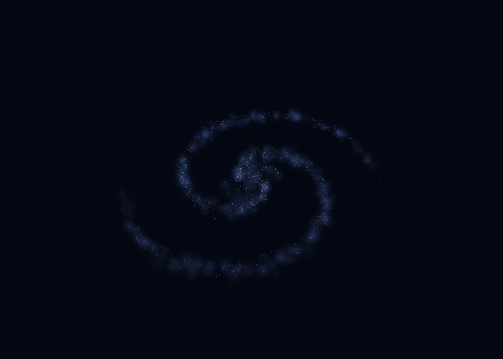
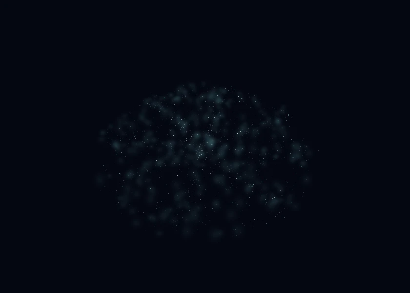
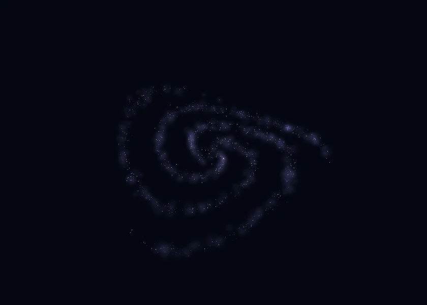
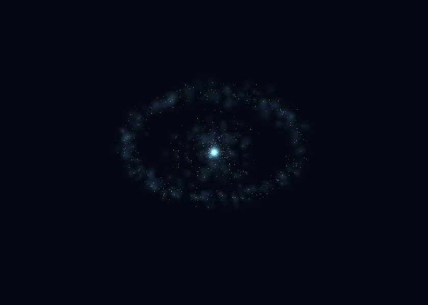
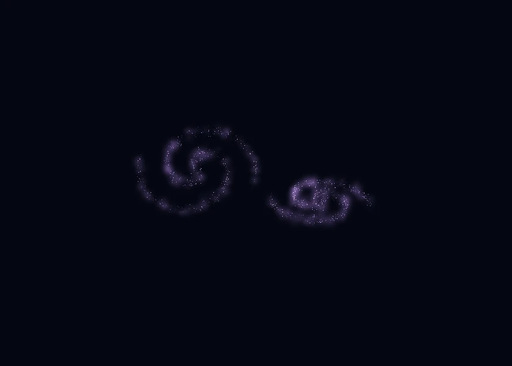
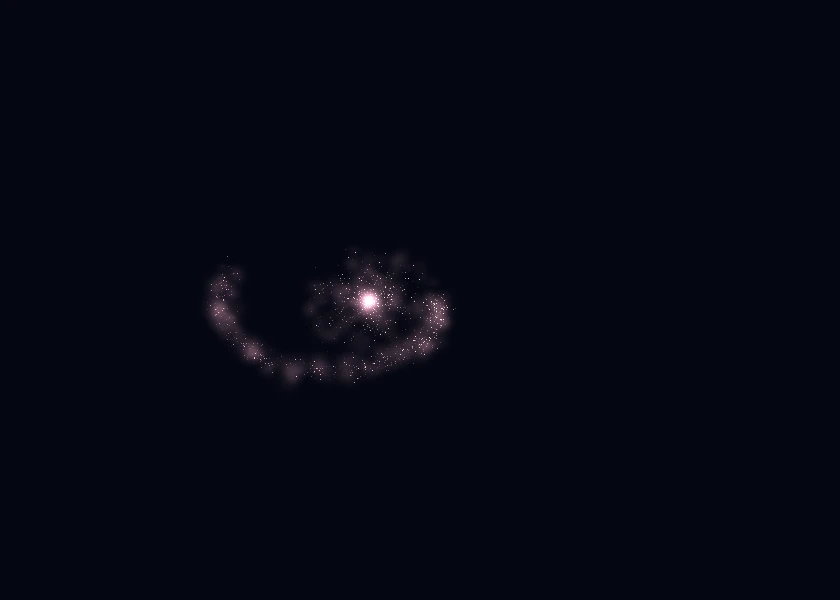
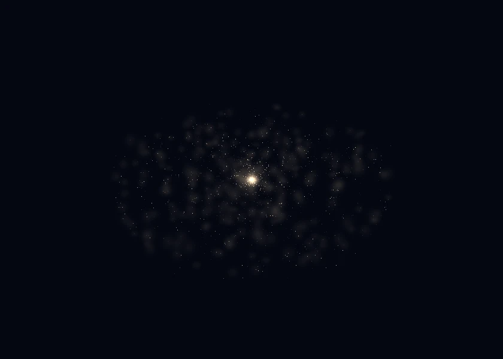
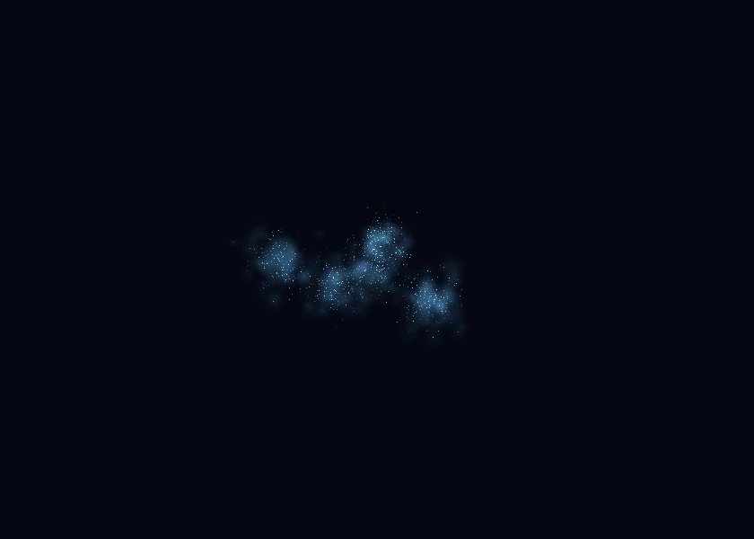

Eight new galaxy forms join the existing destinations, for eighteen reachable galaxies including home. Each retains its seeded three-dimensional shape through approach and entry.

Grand-design spiral
Two long, continuous arms with a warm central core.

Flocculent spiral
Broken, clumpy arms and scattered pink star-forming regions.

Warped disk
A bent stellar disk that changes silhouette with your viewing angle.

Polar ring
A turquoise ring crossing around a central stellar body.

Interacting pair
Two offset spiral bodies sharing one destination.

Tidal stream
A compact central body with a long, curved stellar tail.

Shell elliptical
Amber stars arranged in layered outer shells.

Blue compact dwarf
Small, dense blue clusters with an uneven outline.
Gallery images render the production geometry and glow in an isolated scene at a common size and viewing angle. Flight adds its existing scene lighting and postprocessing.